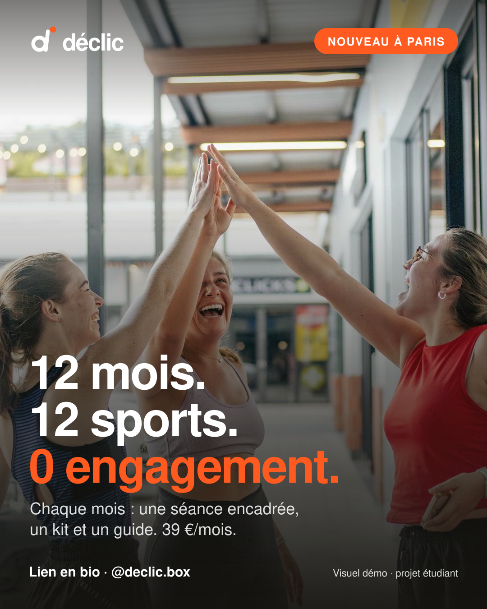
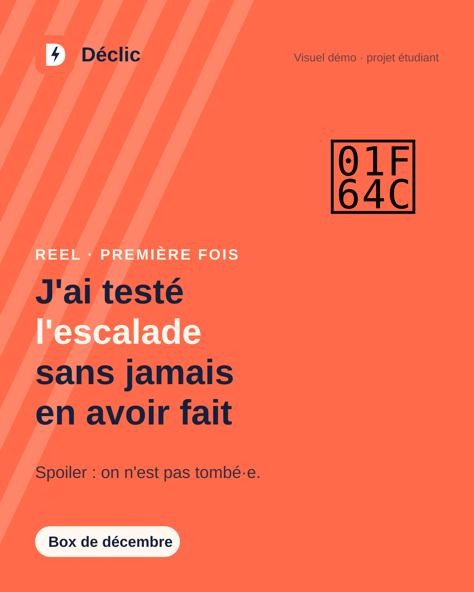
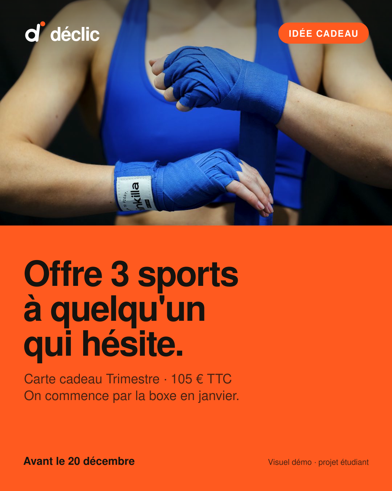

InstagramCarrousel 4:5 (5 slides)Lun. 23/11 · 18h30Notoriété
On a un aveu à te faire : on n'a jamais trouvé « notre » sport. Alors on a créé Déclic. 💥
Chaque mois, un nouveau sport à tester à Paris :
🧗 Décembre : escalade de bloc
🥊 Janvier : boxe anglaise
🧘 Février : yoga vinyasa
…et 9 autres.
Ce qu'il y a dans la box :
✅ 1 séance d'initiation en groupe de débutants
✅ le kit de petit matériel
✅ le guide pour ne pas arriver perdu·e
Sans engagement, 39 €/mois.
Tague la personne avec qui tu testerais 👇
#Paris #SportParis #DébutantSport #NouveauSport #Declic
Slides : 1. couverture · 2. le problème · 3. le programme 12 mois · 4. la box · 5. formules et lien en bio.

InstagramReel 9:16 · 30 sJeu. 3/12 · 19hEngagement
Première fois en salle de bloc. Zéro expérience, beaucoup de magnésie. 🧗♀️
0:00 « J'ai jamais grimpé de ma vie »
0:05 L'échauffement avec le coach
0:12 Premier bloc… raté
0:20 Deuxième essai… RÉUSSI 🙌
0:27 « Bon, je crois que je vais revenir »
C'est ça, la box de décembre. 8 débutant·es, 1 coach, 1h30 pour voir si l'escalade est faite pour toi.
👉 Il reste des places pour les séances du 12 décembre, lien en bio.
#escalade #bloc #ParisSport #Declic
Tournage : séance test avec 3 ami·es, téléphone sur trépied, musique tendance libre de droits.

InstagramPost 4:5 + story lienMer. 16/12 · 12h30Conversion
Tu cherches un cadeau qui ne finira pas au fond d'un placard ? 🎁
La carte cadeau Déclic Trimestre :
→ 3 mois, 3 sports à découvrir
→ 3 séances encadrées + 3 kits
→ 105 € TTC, imprimable tout de suite
Parfait pour la personne qui dit « il faudrait que je me remette au sport » depuis 2019. 😏
Commande avant le 20/12 pour un démarrage en janvier (boxe anglaise 🥊).
Lien en bio.
#IdéeCadeau #CadeauNoël #Paris #Declic